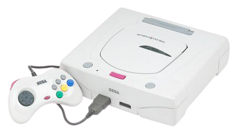
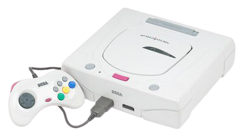

Atari Jaguar
- Concepteur : Flare Technology
- Fabricant : Atari Corporation
- Début de commercialisation :
- Japon - 1994
- Etats-Unis - 1993
- Europe - 1994
- Fin de production - 1996
- Ventes de la console (en unités) - 250 000
- Nombre de titres sortis - 63 (50 sur Jaguar, 13 sur Jaguar CD)
- Ventes de jeux - NC
- Meilleure vente de jeu - Alien vs Predator (85 000)
- Jaguar - Edward
- Jaguar - Opium Testing
Sa petite histoire...
L'Atari Jaguar est la sixième console développée par Atari, commercialisée aux Etats-Unis en novembre 93, et dernière console de la marque à utiliser
des supports physiques. Atari commercialise la Jaguar comme étant la première console 64 bits, tout en rivalisant avec les consoles 16 bits existantes
- Sega Mega Drive et Super NES - et la 3DO 32 bits lancée la même année.
Le développement de l'Atari Jaguar commence au début des années 90 par Flare Technology et le moins que l'on puisse dire est que l'architecture
multi-puces, les bogues matériels et les outils d'assistance manquants aux développeurs rendent le développement des jeux particulièrement difficile.
La Jaguar est une bouse et ses ventes décevantes contribuent au peu d'intérêt des développeurs indépendants à travailler sur cette machine. Ajoutons à
cela un faible développement en interne chez Atari conduisant à une bibliothèque de jeux fantômatiques.
Atari tente de prolonger la durée de vie du système avec l'add-on Atari Jaguar CD et de la commercialiser en tant que console de prochaine génération
à faible coût. Mais avec la sortie de la Sega Saturn et de la Sony PlayStation en 1995, la messe est dite et les ventes de la Jaguar continuent de
chuter, ne vendant finalement pas plus de 250 000 unités avant son arrêt en 1996. L'échec commercial de la Jaguar pousse Atari à quitter le marché des
consoles après en avoir été le leader précurseur. Hasbro Interactive
acquiert toutes les propriétés d'Atari, les brevets de la Jaguar sont déposés dans le domaine public, la console étant déclarée plateforme ouverte.
Depuis lors, le Jaguar a gagné une base de développeurs qui produisent des jeux homebrew pour la console - jeux vidéo produits par des utilisateurs
sur des platesformes de jeux propriétaires -.
Mais qu'est-ce qu'il se paaasse !!??..
La Jaguar est donc développée par les membres de Flare Technology, une société formée par Martin Brennan et John Mathieson. L'équipe affirme qu'elle
peut non seulement fabriquer une console supérieure à la Mega Drive ou à la Super NES, mais être également rentable. Impressionné par leur travail,
Atari les persuade de fermer Flare et de former une nouvelle société appelée Flare II, avec Atari comme mécène. Flare II commence à travailler à la
conception de deux consoles pour Atari. L'une est une architecture 32 bits - nom de code Panther -, et l'autre un système 64 bits - nom de
code Jaguar -. Cependant, les travaux de conception de la Jaguar progressent plus rapidement que prévu et Atari annule le projet Panther pour
se concentrer sur la Jaguar plus prometteuse.
La Jaguar est ainsi commercialisée dans le cadre d'un accord de fabrication de 422 millions d'€ avec
IBM. 'Computer Gaming World' écrira en janvier 94 que la Jaguar est
❝une grande machine à la recherche d'une base développeurs et d'une clientèle❠
car Atari doit
❝surmonter la stigmatisation de son nom - manque de marketing et de support client -, ainsi que de mauvaises relations avec les
développeurs autrefois❠
.
N'oublions pas qu'Atari est quand même le principal responsable du krach du jeu vidéo de 1983 aux USA car les consommateurs eurent la rage de voir
que la ressemblance entre les jeux d'arcade et les jeux de console étaient très très douteuse, à cela ajoutons les jaquettes des boitiers
particulèrement bien dessinées mais bonjour la déception au lancement du jeu !
Alors, bien sûr, la Jaguar eut du mal à fidéliser une base de joueurs. Puis Sony et Sega entrèrent dans la danse et les ventes d'Atari diminuèrent
rapidement. Atari continue néanmoins d'investir massivement dans le développement de jeux Jaguar, conclut des accords pour commercialiser certains
titres sous licence et réduit le prix de sa console mais tout cela n'y suffira point ma bonne dame ! Les mauvaises performances de Jaguar sont causés
par des retards importants dans le développement des jeux entraînant une baisse des commandes en raison de l'inquiétude des consommateurs entre le
moment où la sortie des titres de la plateforme est annoncée et ceux réellement disponibles - Pas fous les clients, pas deux fois ! -, et à
l'introduction des produits concurrents Sega et Sony en mai et septembre 1995. De plus, Atari dispose de ressources financières très limitées et ne
peut donc pas créer la qualité de commercialisation qui soutient historiquement les consoles de jeux à succès.
Dans une interview avec 'Next Generation', le PDG de l'époque, Sam Tramiel - Ne pas confondre Sam et Jack son père qui reprendra les rênes de
l'entreprise suite à un accident cardiaque de son fils -, déclare que la Jaguar est aussi puissante, sinon plus puissante que la Sega Saturn, et
légèrement plus faible que la PlayStation. Next Generation reçoit en retour un déluge de lettres en réponse aux commentaires de Tramiel, en
particulier sa menace de traduire Sony en justice pour dumping si la PlayStation pénétrait le marché américain à un prix de détail inférieur à 250€,
ainsi que sa remarque sur le petit nombre de développeurs tiers pour les jeux Jaguar bonne pour la rentabilité d'Atari - ce qui a bien évidemment
irrité les propriétaires de Jaguar qui étaient déjà frustrés par le peu de jeux sortis -. Bref ! C'est pas ma faute, nanana... On connait la chanson.
Atari communique beaucoup sur la puissance de sa console en proclamant que la Jaguar est le seul système 64 bits. Cette affirmation est remise en
question par certains car le CPU et le GPU exécutent un jeu d'instructions 32 bits, mais envoient des signaux de contrôle aux co-processeurs
graphiques 64 bits - ou accélérateurs graphiques -. Le raisonnement d'Atari selon lequel les puces Tom et Jerry 32 bits fonctionnent
en tandem pour s'additionner à un système 64 bits est démonté dans un mini-éditorial d'Electronic Gaming Monthly, qui indique que
❝Si Sega fait les mathématiques pour la Sega Saturn comme Atari fait les mathématiques pour la Jaguar 64, la Sega Saturn serait un monstre
de 112 bits❠
.
De l'autre côté, Next Generation soutient qu'il s'agit d'un véritable système 64 bits, car le chemin de données de la
DRAM vers le processeur et les puces Tom et Jerry, a une largeur de 64 bits.
C'est la fin...
Les revenus d'Atari diminuent de plus de la moitié en fin d'année 1995. Des licenciements massifs alimentent la presse selon laquelle Atari cesse à la fois le développement et la fabrication de la Jaguar et essaie simplement de vendre les actions existantes avant de quitter l'industrie du jeu vidéo. Bien qu'Atari continue à nier pendant de longs mois, les principaux développeurs de Jaguar tels que High Voltage Software et Beyond Games déclarent qu'ils ne reçoivent plus de nouvelles d'Atari concernant les projets Jaguar. Atari informe ses actionnaires le 12 avril 96 de la nature vraiment désastreuse des affaires : Atari a vendu environ 125 000 unités et lui reste environ 100 000 Jaguar en stock. Durant les mois qui suivirent, il s'agira principalement de liquider le stock. Atari finit par fusionner avec JT Storage - Fabricant de disques durs -, fin de l'histoire !
PlayStation
- Concepteur : Ken Kutaragi
- Fabricant : Sony Computer Entertainment
- Début de commercialisation :
- Japon - 1994
- Etats-Unis - 1995
- Europe - 1996
- Fin de production - 2006
- Ventes de la console (en unités) :
- Monde - 104.25 millions
- Japon - 19.36 millions
- Etats-Unis - 38.94 millions
- Europe - 36.91 millions
- Nombre de titres sortis :
- Japon - 4 944
- Etats-Unis - 1 335
- Europe - 1 639
- Ventes de jeux - plus de 962 millions
- Meilleure vente de jeu - Gran Turismo (10.85 millions)
- PlayStation - Edward

Sony devient le maître du monde...
L'un des monuments du jeu vidéo : la PlayStation. Dire qu'elle est née d'une trahison de
Nintendo vis-à-vis de Sony ! En 1985, Nintendo travaille sur la conception d'un
lecteur supportant des disquettes pour la Famicom, le
Famicom Disk System, mais la nature magnétique réinscriptible de ces
disquettes en fait un support facilement effaçable provoquant une baisse sensible de la durabilité. Nintendo s'est alors intéressé aux différents
standards de CD-ROM et demande à Sony de l'aider à développer un lecteur de
CD-ROM additionnel pour sa future console SNES-CD. Le choix de Sony par Nintendo est facilité car ceux-ci sont déjà en collaboration dans la
conception de la SNES. En effet, c'est Ken Kutaragi, futur père de la Playstation, qui s'est chargé du développement du processeur sonore
SPC-700 chez Sony. Nintendo, très satisfait de la qualité de ce processeur et du travail de Kutaragi, intègre cette puce dans sa console SNES. Un
accord est signé en 1988 pour le développement de la SNES-CD et le travail commence !
La SNES-CD est annoncée par Sony au CES de Las Vegas de 1991. Cependant, quand le président de Nintendo Hiroshi Yamauchi relit le contrat original
entre Sony et Nintendo, il réalise que l'accord passé ne sécurise pas assez le droit de licence que Nintendo applique alors aux éditeurs pour chaque
cartouche produite, ainsi que les droits sur la technologie produite. Yamauchi pète une durite à tel point qu'au lieu d'annoncer leur association le
jour de la conférence de Nintendo au Consumer Electronics Show, le
directeur de la filiale américaine Howard Lincoln monte sur scène et révéle que Nintendo est maintenant en partenariat avec
Philips. What this fucking shit ??
Howard Lincoln et Minoru Arakawa se sont rendus au siège de Philips en Europe, sans en informer Sony, et forment une alliance d'une nature totalement
différente : elle donne le pouvoir total à Nintendo sur toutes les licences sur les futures machines de Philips. L'annonce au Consumer Electronics
Show est un véritable choc. Non seulement c'est une énorme surprise, mais cela est perçu par beaucoup dans la communauté des affaires japonaises comme
une trahison : une compagnie japonaise snobant une autre compagnie japonaise en faveur d'une firme européenne est absolument impensable. C'est
limite Harakiri tout cela ! Comme vous voulez, le sabre ou le magazine !
Après l'effondrement du projet commun, Sony pense arrêter les recherches, mais finalement la compagnie décide de réutiliser tout ce qui a été
développé en commun avec Nintendo pour en faire une console à part entière. Nintendo a vent de cette initiative et tente de poursuivre Sony pour
rupture de contrat devant la cour fédérale des États-Unis, et ainsi obtenir une interdiction de commercialisation de la Play Station - oui, en deux
mots ! -, avec comme argumentaire que Nintendo possède les droits du nom. Le juge fédéral renvoie Nintendo dans les cordes et, en octobre 91, le
premier modèle de la nouvelle Sony Play Station - oui oui ! Toujours en deux mots ! - est révélé.
Seulement 200 machines de ce type sont produites. Néanmoins, malgré leurs divergences et rancœurs, les deux sociétés espèrent trouver des intérêts
commerciaux et industriels communs. Sony n'est pas forcément prêt à prendre le risque de se lancer seul sur ce marché, et Nintendo ne veut pas rater
l'occasion de profiter d'un succès potentiel du projet de Sony, qui plus est sans devoir prendre en charge les coûts de fabrication de cette console.
D'autant que le développement de la SNES-CD avance difficilement avec Philips - Ils auraient peut-être dû se renseigner avant de savoir où mettre
les pieds -. Sony et Nintendo essaient de trouver un accord pour que la Sony Play Station puisse conserver son port cartouche pour les jeux SNES, mais
encore une fois ces deux-là ne parviennent pas à se mettre d'accord sur la répartition des droits, et en même temps, vu le coup de pute, Sony a
bien raison de ne céder sur rien.
Sony réalise que la technologie de la SNES commence à montrer ses limites et que la nouvelle génération de consoles est sur le point de voir le jour :
les travaux commencent début 1993 pour renouveler le concept de la Play Station afin de cibler la nouvelle génération de logiciels et de matériel.
Sony eu alors des discussions avec Commodore afin de racheter la technologie de leur Amiga CD32 mais elles n'aboutiront à rien. Finalement, le port
SNES est retiré, l'espace entre les deux mots est enlevé, et la PlayStation voit le jour. Le logo PlayStation est créé par Manabu Sakamoto, qui a
aussi dessiné le logo des ordinateurs Sony VAIO.
Lancement...
La PlayStation est lancée au Japon le 3 décembre 1994, le 9 septembre 1995 aux États-Unis et le 29 septembre 1995 en Europe. En Amérique, Sony profite d'un lancement réussi avec des titres de tous genres comme
Presque tous les titres de lancement de Sony et Namco donnent lieu à des suites. Teiyu Goto, le designer de la manette, explique le choix de symboles plutôt que de lettre pour les boutons ❝Le Triangle se réfère au point de vue : il représente la tête de tout un chacun ou une direction, et je l'ai voulu de couleur verte. Le Carré symbolise une feuille de papier : il représente les menus ou les documents, le tout de couleur rose. Le Rond et la Croix représentent le "oui" et le "non". Je les ai faits respectivement en rouge et en bleu❠ . Les titres les plus populaires sur PlayStation sont
- Ridge Racer
- Crash Bandicoot
- Dragon Quest IV
- Final Fantasy VII
- Driver
- Gran Turismo
- Metal Gear Solid
- Parasite Eve
- Silent Hill
- Spyro the Dragon
- Tony Hawk's Skateboarding
- Tekken
- Tomb Raider
- Castlevania: Symphony of the Night
- Resident Evil
- WipEout
Un sacré paquet de hits ! Le record de vente revient au jeu de course "Gran Turismo" avec 10,85 millions d'unités distribuées. "Tekken" est le premier jeu PlayStation à dépasser la barre du million d'unités écoulées. Le dernier jeu produit sur la console est FIFA Football 2005.
Sega Saturn
- Concepteur : Sega
- Fabricant : Sega
- Début de commercialisation :
- Japon - 1994
- Etats-Unis - 1995
- Europe - 1995
- Fin de production - 2000
- Ventes de la console (en unités) :
- Monde - 9.5 millions
- Japon - 5 millions
- Etats-Unis - 2.7 millions
- Europe - 971 000
- Nombre de titres sortis - 1000 (241 pour l'Europe)
- Ventes de jeux - NC
- Meilleure vente de jeu - Virtua Fighter 2 (10.85 millions)
- Saturn - Edward
- Saturn - Antiqui'Tech
 

Sa petite histoire...
La Saturn est la quatrième console conçue par l'entreprise japonaise, succédant à la Mega Drive, avec des jeux édités au format CD-ROM. Sa ludothèque se compose de nombreux jeux issus de l'arcade, ainsi que de titres développés en interne. La conception de la Saturn débute en 1992 avec un processeur central unique: le SH-2. Au fil de sa conception, la console est améliorée afin de rivaliser techniquement avec la PlayStation de Sony. La Saturn est un succès au Japon, contrairement aux États-Unis mais sera finalement plombée par la Nintendo 64 sortie fin 96. La Saturn perd rapidement des parts sur le marché américain et européen, où sa commercialisation est arrêtée en 1998. La console sera exploitée au Japon jusqu'en 2000. La Saturn bénéficie de plusieurs jeux emblématiques, tels que
Pour autant, elle reçoit un accueil partagé entre les observateurs et les joueurs. Son architecture complexe rend sa programmation difficile, le soutien limité des développeurs tiers et l'incapacité des équipes de développement de Sega à sortir un jeu de la série "Sonic the Hedgehog", connu sous le nom Sonic X-treme - dont l'émission en lien est très bien expliqué - sont considérés comme les principaux facteurs des mauvais résultats de la console. La direction de l’entreprise japonaise sera sous le feu critiques pour ses prises de décisions foireuses au cours du développement et de l'arrêt inopportun de la commercialisation de la console.
Conception...
Afin de concurrencer la Super NES et la Jaguar, Sega réfléchit au début des années 90 à trois projets censées incarner le futur de la console de salon. Si certaines sont des évolutions de la Mega Drive, d'autres sont des créations de consoles à part entière. Ces projets répondent chacun à un nom de code faisant référence à une planète du système solaire située derrière la Terre, par opposition aux consoles portables dont les noms de code s'appuient sur les planètes placées entre le Soleil et la Terre - la Game Gear, sortie en 1990, est nommée en interne projet Mercury -. Le premier est le projet Saturn, une console 32-bits utilisant un lecteur de CD-ROM. Afin de combler l'écart de performance entre la Saturn et la Mega Drive, un projet Mars est mis en place. D'abord envisagée comme la première console 32-bits de Sega, la Mars, devenue 32X, devient rapidement convertie en une extension de la Mega Drive afin d'améliorer ses performances et de combler l'écart de technologie entre elle et la Saturn pour empêcher les consommateurs américains disposant d'une Mega Drive d'acheter une Jaguar.
La Saturn, nom de code initial du système lors de sa conception au Japon, se voit finalement choisi comme nom officiel du produit. Celui-ci fait
référence à la planète Saturne, sixième du système solaire, dont les anneaux forment un disque autour de son équateur. Pour Sega, Saturne reste la
planète du disque géant, une image mentale soutenant l'idée de sa Saturn utilisant le CD-ROM au détriment des cartouches. La Saturn doit sa conception
à deux systèmes d'arcades produits par Sega : le System 32, alors considéré
comme le plus abouti des systèmes d'arcade de jeu vidéo en deux dimensions et la
Model 1, développée pour les jeux en trois dimensions.
Parmi les jeux sortis sur cette dernière, "Virtua Fighter" édité en 1993, rencontre un succès mondial, à tel point que cet opus est choisi comme titre
de lancement pour la Saturn. Cette dernière, d'abord pensée pour générer des graphismes en deux dimensions de qualité, doit donc être capable de
générer des graphismes en trois dimensions. Or, les cartes graphiques 3D sont onéreuses et Sega souhaite réduire le coût de production de sa console.
Tom Kalinske contacte alors les dirigeants de Sony, qui travaillent sur le développement de la PlayStation, afin de concevoir conjointement un
hardware. Les négociations entre Tom Kalinske et Sony échouent, mais Ken
Kutaragi, le concepteur en chef de la PlayStation, s'oriente dès lors vers une console capable de faire fonctionner des jeux tridimensionnels - Bien
joué Tom ! -.
Pour s'assurer que des jeux de grande qualité en 3D soient disponibles au début de la commercialisation et pour créer un environnement de travail plus
productif, les développeurs du pôle arcade de l'entreprise sont sollicités afin d'imaginer les jeux de la prochaine console. De nouvelles équipes de
développement, comme la Team Andromeda, à l'origine de Panzer Dragoon, sont formées lors de cette période. La Team Andromeda est créée en 1994 puis
dissoute en 1998 après la sortie du jeu Panzer Dragoon Saga.
Alors que la conception de la Saturn est largement entamée, les rapports dévoilés sur les capacités techniques de la PlayStation inquiètent fortement
Hayao Nakayama, le président de Sega Enterprise. Il convoque tout le département R&D de l'entreprise et exige une amélioration des performances de la
future console sur le traitement des données en trois dimensions, ceux-ci apparaissant comme le point faible. Hayao Nakayama donne un an pour
améliorer la Saturn à l'équipe de Hideki Sato. Cette dernière décide d'y ajouter un deuxième processeur d'affichage vidéo pour améliorer les
performances en deux dimensions et les textures générées par la console.
Cherchant une puce graphique alternative pour la console, Kalinske négocie un accord avec Silicon Graphics mais Sega of Japan la considère alors trop
grande, posant quelques problèmes techniques et choisit de rejeter l'accord. Silicon Graphics vend alors sa puce à Nintendo, qui l'exploite pour sa
Nintendo 64 - Bien joué Sega of Japan ! -. Sega et Hitachi forment alors une co-entreprise afin de développer un nouveau processeur pour la Saturn, le
SuperH RISC Engine ou SH-2. La console se voit finalement configuré de ce double processeur. Kazuhiro Hamada, chef du développement de la
Saturn, rapporte que
❝le SH-2 est choisi pour des questions de coût et d'efficacité. La puce dispose d'un système de calcul similaire à un
DSP - Digital Signal Processor -, mais nous nous sommes rendu compte
qu'un seul processeur n'est pas suffisant pour calculer un monde en 3D❠
.
Lancement...
La Saturn est présentée au Toy Show de Tokyo en juin 94 - de son nom complet, The International Tokyo Toy Show est le plus grand et le plus
important salon professionnel annuel japonais pour l'industrie du jouet et se tient à Tokyo chaque année depuis 1962. - et suscite beaucoup d'attentes
de la part des observateurs qui se montrent élogieux à l'égard de la 32X, présageant des qualités techniques de la Saturn. En effet, en cette fin
d'année, pas moins de neuf nouvelles consoles sont attendues, et la presse spécialisée estime que seule la Saturn est capable de rivaliser avec la
PlayStation. Sega bénéficie d'une bonne réputation auprès du public et des développeurs, tandis que Sony, nouvelle venue dans l'industrie
vidéoludique, ne peut pour l'instant s'appuyer que sur sa communication médiatique. De ce fait, le journaliste Gordon Craick, officiant pour le
Frontier Console Magazine, estime que la Saturn pourrait dominer le marché des consoles de salon d'ici la fin de l’année 1996 - Bien joué
Gordon ! -. Sega prévoit de commercialiser la Saturn avec les meilleurs jeux d'arcade de l'époque, à savoir "Virtua Fighter" et
Virtua Racing, comme titres de lancement. Néanmoins, les modifications
apportées entraînent une hausse du prix de la console.
La Saturn au Japon devient ainsi la console la plus chère de l'histoire de Sega. Virtua Fighter est presque systématiquement écoulé avec la nouvelle
console, contribuant ainsi à son succès lors de sa mise en vente. Sega prévoit également d'accompagner la Saturn de deux autres titres de lancement,
Clockwork Knight et "Panzer Dragoon".
Les détaillants achètent en moyenne une PlayStation pour deux Saturn, ceci faisant dire aux dirigeants de Sega que la Saturn rencontre un succès
inédit. Bien vu ! 90 % des consoles de Sony disponibles sur le marché sont effectivement achetées entre décembre et juin 95, contre 65 % pour les
consoles de Sega. Celles-ci souffrent en effet du manque de jeux emblématiques. Les chiffres internes de Sega mentionnent 500 000 copies de la
Saturn vendues au Japon à fin 1994, contre 300 000 pour la console de Sony. Tom Kalinske pense ainsi atteindre le million d’exemplaires d'ici avril et
le double à la fin de cette même année.
Néanmoins, la PlayStation bénéficie d'un meilleur taux de vente et finit par supplanter la Saturn. Sony attire de nombreux développeurs indépendants
grâce à de faibles frais de licence à 9€, d'excellents outils de développement et la mise en place d'un système de commande révolutionnaire de sept à
dix jours. Cela permet aux éditeurs de faire face à la demande de façon beaucoup plus efficace par rapport au système de commande de cartouches, alors
courant dans l'industrie vidéoludique, dont le délai va de dix à douze semaines. Sony annonce la commercialisation d'une nouvelle version de sa
console au Japon en juin 95, basée sur le modèle américain avec une baisse du prix de 25%.
Nakayama riposte en diminuant le prix de la Saturn de 20%. En effet, la PlayStation avec 1,2 million d'exemplaires vendus est en passe de rattraper la
Saturn écoulée à 1,3 million d'unités. Le mois suivant, Sega dévoile le portage sur sa machine de "Virtua Fighter 2", dont les qualités graphiques,
largement supérieures au précédent opus, sont acclamées par la presse spécialisée et le grand public. 1,7 million de copies sont écoulées dans le
monde : "Virtua Fighter 2" devient ainsi le jeu le plus vendu de la Saturn.
C'est la gueeeerrre !..
Aux États-Unis, l'attente du public pour la sortie des consoles de jeux vidéo de cinquième génération reste forte. L'on dit que celles-ci sont
capables de surpasser les graphismes en trois dimensions des ordinateurs personnels et des bornes d’arcade. Selon le magazine GamePro,
❝les rêves des années 80 deviendront réalité dans les années 90, car les limites technologiques qui ont freiné le matériel informatique
seront dépassées au cours des prochaines années. Les systèmes 32 bits et 64 bits offrent des fonctionnalités telles que la 3D, la vidéo en
mouvement intégral, 16 millions de couleurs, les coprocesseurs graphiques, la reconnaissance vocale❠
.
Tom Kalinske, Directeur Général de Sega of America, annonce le lancement de la Saturn aux États-Unis pour le 2 septembre 95. Et là, l'eau est bien
dans le gaz. En effet, cette annonce est faite durant le mois de juin et Hayao Nakayama ne l'entend pas de cette oreille. Il envoie une délégation au
siège de Sega of America pour ordonner une commercialisation dans les plus brefs délais. La branche nippone de Sega souhaite reprendre le contrôle du
marché américain après l'échec commercial de la 32X d'autant plus que Nakayama craint que Sony utilise une campagne publicitaire agressive et coûteuse
pour assurer une large couverture médiatique à la commercialisation de sa PlayStation.
Faute de moyens financiers, Sega ne peut concurrencer Sony sur ce terrain et l'entreprise nippone doit riposter en lançant le plus rapidement possible
la Saturn pour lui donner un avantage sur sa concurrente. Or Tom Kalinske s'oppose à la décision de Hayao Nakayama, arguant que la Saturn serait trop
chère et que peu de jeux seraient disponibles à sa sortie - ce qui n'est pas faux ! -. Le conseil d'administration de Sega of Japan, qui impute
l'échec de la 32X à Kalinske, rejette les arguments du président de la filiale américaine, non mais !. Le 11 mai, lors de la première édition de l'
Electronic Entertainment Expo à Los Angeles, Tom Kalinske
présente la Saturn au public et son prix de lancement : 405€. Il annonce également que vingt nouveaux jeux sont en cours de développement - Bien
joué Tom ! Haaa ce Tom, quel farceur ! -.
L'annonce embarrasse les revendeurs n'ayant pas été mis au courant de la sortie surprise de la Saturn dont les enseignes Best Buy et Walmart. Du coup,
caca nerveux ! Et KB Toys retire les produits Sega de son catalogue. Sony dévoile le même jour le prix de sa PlayStation à 250€, par la voix de son
président Steve Race, quittant alors la scène sous les applaudissements des observateurs. L'Electronic Entertainment Expo voit donc
s'affronter seulement deux acteurs de l’industrie vidéoludique, puisque la 3DO Interactive Multiplayer s'apprête à se retirer du marché,
tandis que la Jaguar d'Atari souffre du manque de jeux disponibles. Enfin, Nintendo annonce la sortie de sa nouvelle console pour avril 96 au plus
tôt. Le relatif manque de popularité de "Virtua Fighter", combiné à la publication de seulement deux nouveaux titres entre mai et septembre, empêche
la firme japonaise de capitaliser sur cette commercialisation anticipée : de nombreux exemplaires de la Saturn se retrouvent invendus dans les
magasins, d'autant que les éditeurs tiers, pressés par l'arrivée soudaine de la console, éditent des titres souffrant de problèmes graphiques.
Dans les deux jours suivants sa sortie américaine, les exemplaires de la PlayStation, soutenue par une vaste campagne publicitaire, s'écoulent plus
que la Saturn en cinq mois de ventes avec dix-sept jeux accompagnant sa sortie. Sega of America réplique vainement en commercialisant une édition de
la Saturn comprenant "Clockwork Knight", Sega Worldwide Soccer
et un bon d'achat pour "Virtua Fighter".
La sortie hâtive de la Saturn ne permet pas à Sega de promouvoir correctement sa console. Le portage réussi de "Ridge Racer", un jeu d'arcade
développé par Namco, contribue au succès rapide de la PlayStation et suscite des
comparaisons dans la presse avec "Daytona USA", son rival sur Saturn, considéré comme moins bon. Namco, un concurrent de longue date de Sega dans ce
secteur, dévoile également son nouveau système de borne d'arcade, le System 11,
dont la technologie est fondée sur celle de la PlayStation. Même techniquement dépassé par la Model 2 de Sega, le coût moindre du System 11 convient
mieux aux petites salles d'arcade.
Namco débauche d'ailleurs des développeurs de Sega et produit un nouveau jeu de combat, "Tekken", pour le System 11 et la PlayStation. Conçu par
Seiichi Ishii, un ancien designer de "Virtua Fighter", "Tekken" se veut être un titre très similaire au jeu de combat de Sega mais se démarque par des
textures plus détaillées et deux fois plus d'images par seconde. Ses graphismes de haute qualité et le portage quasi parfait de ce jeu d'arcade sur
console de salon lui valent de surpasser son homologue en popularité, devenant le premier titre de la PlayStation à dépasser le million d'exemplaires
vendus.
Sega abaisse le prix de la Saturn à 250€ le 2 octobre 95. De plus, des portages de qualité des jeux à succès issus de la Model 2, "Sega Rally
Championship", "Virtua Cop" et "Virtua Fighter 2" - tournant en haute résolution et à une fréquence de 60 images par seconde -, considérés comme
meilleurs que leurs concurrents sur PlayStation, sont édités en fin d'année. En outre, un exemplaire de "Virtua Fighter Remix", qui corrige les
défauts du premier opus de la série, est offert à chaque acquéreur d'une Saturn. Malgré une hausse des ventes de la Saturn pendant les fêtes, Sony
domine le marché vidéoludique américain, à la grande surprise des observateurs : 300 000 exemplaires de la PlayStation sont écoulés, contre 120 000
Saturn.
Ces mauvaises ventes entraînent une baisse de 35% des bénéfices de Sega sur le deuxième semestre de l’année 1995. L'année suivante, la ludothèque de
la PlayStation est considérablement plus fournie comparativement à sa rivale, bien que Sega espère générer un intérêt accru pour sa console, avec des
exclusivités à venir, comme "Nights into Dreams". Dans sa première année de commercialisation, la PlayStation s'empare de plus de 20% du marché
vidéoludique américain. Lors de la deuxième édition de l'Electronic Entertainment Expo de mai 96, Sony annonce la baisse du prix de sa
machine à 169€. Le lendemain, Sega réplique en alignant le prix de la Saturn, pourtant plus chère à produire. La ristourne de Sony est en fait une
réaction à la sortie de la deuxième version de la Saturn au Japon, vendue pour 169€.
Allez Sega ! Reprend ton souffle !..
Sega doit remonter la pente face à Sony. À l'échelle de l'ensemble du marché américain, Sega conserve cependant 38 % de parts du marché, contre 30 %
pour Nintendo et 24 % pour Sony. Malgré cela, un ralentissement de l'industrie du jeu vidéo dans son ensemble fait diminuer les revenus de Sega. Lors
de ce salon en Californie, Sega présente une demi-douzaine de nouveaux jeux, comme "Nights into Dreams", dont les qualités enthousiasment le public,
et Cyber Troopers Virtual-On : Operation Moongate, qui
bénéficie des animations en trois dimensions les plus fluides de l'époque. En complément, Sega dévoile le troisième opus de "Virtua Fighter", sur le
système d'arcade Model 3. Cette sortie alimente les rumeurs d'une publication prochaine de ce jeu sur console.
De son côté, Nintendo fait la promotion de sa nouvelle console Nintendo 64, première machine de jeux 64-bits de l’histoire, et de ses premiers titres,
avec entre autres
dont les graphismes surclassent les jeux de la Saturn et de la PlayStation. Sony reste le principal rival et Sega n'est plus vraiment une menace.
Enfin, Sony attaque directement Nintendo en annonçant la baisse du prix de sa console à 170€, contre 250€ pour la Nintendo 64.
L'entreprise japonaise dévoile également un nouveau jeu de platesformes, "Crash Bandicoot", dont le héros éponyme, un marsupial orange, présente les
mêmes caractéristiques que Sonic, la mascotte de Sega. Les graphismes de cette nouveauté égalent ceux des titres de la Nintendo 64. "Crash Bandicoot"
connaît un immense succès commercial, puisque deux millions de copies sont vendues dans le monde neuf mois après sa sortie. Face à une telle
concurrence, lors du dernier jour de l'E3, Sega abaisse le prix de sa console à 250€, une décision jugée pathétique par les représentants de Sony,
puis à 170€, soit sous le seuil de rentabilité. Néanmoins, Hayao Nakayama ne craint pas Nintendo, persuadé que "Crash Bandicoot", qu'il décrit comme
étant un
❝jeu de poulet❠
,
mettrait cette dernière en difficulté - Bien joué Hayao ! -.
Ca part en cacahuète...
A la demande de Hayao Nakayama, Sega of America rompt avec l'entreprise publicitaire "Goodby, Berlin & Silverstein" le 30 mai 96, à l'origine de la
campagne de publicité Sega Scream - Sans rire ! Je me demande toujours
comment cela a pu être validé ! -. Ce changement doit permettre à Sega d'afficher une image plus douce dans ses publicités : ainsi, le cri
SEGA ! est supprimé et des conférences de presse sont organisées dans l'optique de construire une image plus conviviale auprès des familles.
Cette nouvelle stratégie de communication déplaît fortement aux amateurs de Sega appréciant justement l’image rebelle de la firme japonaise. Cette
dernière intervention de Hayao Nakayama auprès de la filiale américaine vient à bout de Tom Kalinske, considéré par les Japonais comme le principal
responsable de la débâcle de la Saturn aux États-Unis. Tom Kalinske démissionne, le lendemain suit David Rosen le fondateur de l’entreprise, en signe
de protestation face à la manière dont Kalinske a été traité par Nakayama. Tom Kalinske déclarera à propos de la Saturn que
❝personne n'aurait pu réussir à commercialiser cette chose❠
.
Aurais-tu la haine Tom ?
Le 16 juillet, l'entreprise annonce que Shoichiro Irimajiri, un ancien cadre de Honda, est nommé président de Sega of America, où il travaille déjà
activement depuis 1993. Enfin, Bernie Stolar, un ancien dirigeant de Sony Computer Entertainment America, devient vice-président de Sega of
America chargé du développement des produits et des relations avec l'extérieur. Bernie Stolar est considéré comme un atout majeur par les responsables
de Sega. Il a pu, par exemple, obtenir pour PlayStation une exclusivité d'une durée de six mois pour
Mortal Kombat 3 en 1995 et aidé à tisser d'étroites relations avec
Electronic Arts lors de son précédent poste. Enfin, sous l'égide de Bernie
Stolar, Sega of America projette de développer son activité dans le secteur des jeux pour PC. Ce dernier déclare à propos de son nouvel employeur :
❝j'ai choisi l'univers de Nakayama en raison de son amour pour les logiciels. Nous avons parlé de l'élaboration d'une nouvelle console,
dans laquelle je serai très impliqué, j'en façonnerai l'orientation, embaucherai une nouvelle équipe de personnes et restructurerai Sega. C'est
pour moi une grande opportunité❠
.
Faute de moyens financiers suffisants et conscient que la Saturn ne peut définitivement plus rivaliser avec la PlayStation, ni avec la Nintendo 64, Sega décide de mettre fin à toute campagne publicitaire à la télévision. En effet, fin 1995, la Saturn s'est vendue à 900 000 exemplaires, contre deux millions pour la console de Sony et 350 000 pour la nouvelle venue de Nintendo. À l'échelle mondiale, huit millions d'exemplaires de la PlayStation sont vendus, contre trois millions pour la Saturn et 1,5 million pour la Nintendo 64. Ce cuisant échec alimente les rumeurs selon lesquelles Sega pourrait quitter l'industrie du jeu vidéo, ce que Marcian Hoff, vice-président de Sega of America en charge du marketing dément, en annonçant que la firme japonaise travaille sur la conception d'une nouvelle console, seul moyen pour elle d'éponger les pertes financières subies à cause de la Saturn. D'après le journaliste spécialisé Steven Kent, ❝Sega, qui a prouvé que le marché est assez grand pour deux, montre désormais qu'il ne l'est pas assez pour trois❠ . C'est la dernière année durant laquelle Sega réalisera des bénéfices. Les difficultés financières obligent Sega of America à une restructuration interne qui débouche sur le licenciement d'une centaine d'employés.
C'est la fin de Sega !..
Le président de Sega, Isao Okawa, entreprend une restructuration de son entreprise afin de la préparer au lancement de la nouvelle console, la
Dreamcast, qui est déjà en développement. Il ordonne à Sega of America d'arrêter la production de la Saturn et de licencier 30% de son personnel.
Okawa procède également à un renouvellement du conseil d'administration : quinze de ses vingt-cinq membres sont encouragés à quitter leur siège. Parmi
eux, Hayao Nakayama, qui ne réussit pas à endiguer les déficits accumulés par Sega depuis le lancement de Saturn, et qui échoue dans son projet de
fusion avec Bandai, démissionne le 12 janvier 1998 de son poste de directeur
général et est remplacé par Shoichiro Irimajiri.
Après cinq années de baisse générale des bénéfices, Sega subit ses premières pertes financières depuis son introduction à la Bourse de Tokyo en 1988.
L'annonce de la fin de la production de la Saturn a des conséquences immédiates sur la publication de nouveaux jeux aux États-Unis. En effet, dès
janvier, Capcom annule la sortie de Resident Evil 2 sur la console
de Sega. En outre, la traduction en anglais de Grandia est elle aussi
suspendue, tout comme celle de
Lunar : Silver Star Story Complete. Au total,
seulement douze jeux Saturn sont édités en Amérique du Nord en 1998,
Magic Knight Rayearth étant la dernière sortie officielle,
contre 119 deux ans plus tôt. À la fin janvier, Sega of America abaisse le prix de la Saturn à 85€ et celui de ses jeux à 9€ afin de se débarrasser
des stocks, la démarche étant rapidement suivie en Europe et au Japon. Les magasins Walmart et Electronics Boutique réduisent même le prix de la
console à 65€ et celui des jeux à seulement 4€.
Si des jeux comme "Nights into Dreams", "Panzer Dragoon", "Virtua Fighter 2", "Tomb Raider", "Resident Evil" ou encore
Duke Nukem 3D sont rapidement en rupture de stock, les jeux vidéo de
sport restent sur les étalages pendant des années. Malgré le succès de cette liquidation des inventaires de Sega, la firme nippone n'en tire aucun
bénéfice, les rabais étant trop importants. Le 31 mars, la commercialisation de la Saturn est définitivement interrompue en Amérique du Nord. Deux
mois plus tard, Sega met un terme à la production de nouveaux jeux pour la Saturn. Ainsi, seuls sept nouveaux jeux sont édités après cette date
- House of the Dead
- Shining Force III
- Burning Rangers
- Magic Knight Rayearth
- Street Fighter Alpha 3
- Final Fight Revenge
- et Yuyu Gensyokuoku Deluxe Edition au Japon
La Saturn est retirée de la vente en Europe en novembre et au Japon le 23 décembre 2000. La décision d'abandonner la Saturn a pour conséquence de
laisser le marché occidental sans jeux Sega pendant plus d'un an, ce qui est en grande partie la cause d'une perte nette consolidée supplémentaire de
380 millions d'€. Au total, entre 1993 et 1998, Sega accumule environ 903 millions d'€ de dettes.
À la suite de ces pertes, le constructeur annonce son intention de supprimer 1 000 postes, soit près d'un quart de ses effectifs, dont 700 chez Sega
of America. Avec moins de 10 millions d'unités vendues, la Saturn est considérée comme un échec commercial. Les problèmes de distribution et de
disponibilité dans les points de vente sont cités comme un facteur important de l'échec de la Saturn, car le lancement surprise de la console a entamé
la réputation de Sega auprès des principaux détaillants. Inversement, le long retard de Nintendo dans la sortie d'une console 3D et les dommages
causés à la réputation de Sega par des extensions mal supportés pour la Mega Drive sont considérés comme des facteurs majeurs de la réussite de Sony
sur le marché des consoles.
3DO
- Concepteur : Dave Needle et Robert J. Mical
- Fabricant : Panasonic, Sanyo, Goldstar
- Début de commercialisation :
- Japon - 1994
- Etats-Unis - 1993
- Europe - 1994
- Fin de production - 1996
- Ventes de la console (en unités) - 2 millions
- Nombre de titres sortis - 217
- Ventes de jeux - NC
- Meilleure vente de jeu - Gex (1 million)
- 3DO - Edward
Sa petite histoire...
3DO Interactive Multiplayer est une console conçue par l'entrepreneur et fondateur d'Electronic Arts Trip Hawkins mais l'origine de la 3DO
revient à Dave Needle et R.J. Mical du New Technologies Group, concepteurs du Commodore Amiga et de l'Atari Lynx. La 3DO n'est pas une
console fabriquée par l'entreprise elle-même, mais sous une série de spécifications, peuvent être concédées en licence à des tiers. Panasonic produit
les premiers modèles en 1993 puis d'autres versions du matériel sont commercialisées puis par GoldStar - devenu LG Electronics : LG pour Lucky
Goldstar - et en 1995 par Sanyo. Malgré un lancement prometteur - y compris le fait d'être nommé 'Produit de l'année 1993' du magazine Time - et une
multitude de technologies de pointe, le prix élevé de la 3DO et un marché de console sursaturé empêchent le système de remporter un succès comparable
aux concurrents vétérans Sega et Nintendo. En conséquence, elle est abandonnée assez rapidement trois ans après.
L'objectif de la société est de créer une norme de jeu vidéo de nouvelle génération sur CD qui soit fabriquée par divers partenaires. 3DO perçoit une
redevance sur chaque console vendue et sur chaque jeu fabriqué. Pour les éditeurs de jeux, le faible taux de redevance par jeu est une meilleure
affaire que les redevances plus élevées versées à Nintendo et Sega lors de la création de jeux pour leurs consoles.
Trip Hawkins est une connaissance de longue date de Needle et Mical et il constate que leur conception correspond très bien à sa philosophie
d'architecture et d'approche. Donc plutôt que de créer une toute nouvelle équipe et de repartir de zéro, il se joint à eux et établit une vraie
création. La société 3DO ne dispose pas des ressources nécessaires pour fabriquer des consoles et concède plutôt le matériel sous licence à d'autres
sociétés pour la fabrication. Trip Hawkins raconte qu'ils ont approché tous les fabricants d'électronique, mais que leur principal objectif reste
Sony et Panasonic, les deux plus grandes sociétés d'électronique grand public au monde. Cependant, Sony a déjà commencé le développement de sa propre
console PlayStation, et décide finalement de continuer à travailler dessus plutôt que de signer avec 3DO. L'ancien PDG de Sega, Tom Kalinske, s'est
aussi engagé en des discussions très sérieuses pour que Sega s'implique dans la 3DO. Mais les coûts élevés ont finalement rebuté Sega.
Par contre, Panasonic lance la 3DO avec son modèle FZ-1 mais certaines entreprises obtiennent la licence matérielle sans jamais les avoir construites
comme Samsung, Toshiba et AT&T. L'octroi de licences à des fabricants indépendants rend le système extrêmement coûteux et ceux-ci ne font qu'un
profit sur le matériel lui-même, tandis que la plupart des principaux fabricants de consoles de jeux, tels que Sega et Sony, vendent leurs systèmes à
perte et compensent par les ventes de logiciels. D'un avis personnel, ces entreprises se sont octroyées ces licences en anticipation d'un éventuel
succès de la console qui les aurait vu s'inscrire dans la partie.
La bataille pour survivre...
3DO effectue des mises à jour continuelles du matériel de la console jusqu'à la commercialisation du système, ce qui fait qu'un certain nombre de
titres manquent à la date de lancement. En fait, il en manque tellement que le seul logiciel 3DO disponible est le jeu
Crash'n Burn. Panasonic ne réussit pas non plus à fabriquer une grande
quantité de consoles à temps pour le jour J et la plupart des magasins de détail ne reçoivent qu'une ou deux unités. Le lancement japonais connait un
succès modéré et les ventes chutent rapidement. D'ailleurs la console finira comme hébergeur de sites pornographiques - La honte ! -.
La 3DO, reconnue console la plus avancée du marché, perd face à la PlayStation et à la Saturn. Pourtant 3DO répond en mettant l'accent sur sa grande
bibliothèque de logiciels existante, sur un prix inférieur, et avec un successeur : la M2. Pour assurer aux consommateurs que la 3DO serait toujours
prise en charge, la M2 est annoncée comme un complément pour la 3DO à devenir une console à part entière et rétro-compatible. Ha ben non en fait !
3DO ne tiendra pas ses engagements et le projet M2 sera purement annulé.
Contrairement à Panasonic, Goldstar ne produit que du matériel, pas du logiciel. Cela rend difficile la gestion de baisses de prix jusqu'à vendre à
perte. Goldstar essaie bien de changer de modèle de vente en publiant ses propres logiciels mais bien trop tard pour inverser la courbe. Cette absence
de rentabilité, combinée à l'acquisition par Panasonic de droits exclusifs sur la technologie M2, fait que Goldstar jette l'éponge et laisse Panasonic
seule entreprise à soutenir le développement de logiciels. Le système 3DO est arrêté à la fin de 1996.
La société 3DO se restructure à peu près à la même époque, vendant sa division matérielle pour devenir une entreprise multiplateforme axée sur le
développement de logiciels et les jeux en ligne. Le prix élevé est considéré comme l'un des nombreux problèmes conduisant à l'échec de la 3DO ainsi
qu'un manque de financement important dont les grandes entreprises telles que Sony profitent. Personnellement, je pense qu'il devait y avoir aussi un
certain nombre de trouducs dans cette boite pour se planter autant à tous les niveaux. Peu de temps après que The 3DO Company abandonne, Trip Hawkins
attribuera son échec au modèle de licence pour la fabrication de matériel et de logiciels à des tiers. Il estime que pour qu'une console soit un
succès, il faut une seule entreprise solide pour prendre la tête du marketing, du matériel et des logiciels, et souligne qu'il s'agit essentiellement
d'un manque de coordination entre The 3DO Company et Panasonic.
Nintendo 64
- Concepteur : Nintendo & Silicon Graphics
- Fabricant : Nintendo
- Début de commercialisation :
- Japon - 1996
- Etats-Unis - 1996
- Europe - 1997
- Fin de production - 2003
- Ventes de la console (en unités) :
- Monde - 32.93 millions
- Japon - 5.54 millions
- Etats-Unis - 20.63 millions
- Europe - 6.75 millions
- Nombre de titres sortis - 388
- Ventes de jeux - NC
- Meilleure vente de jeu - Super Mario 64 (11.89 millions)
- Nintendo 64 - Edward
Sa petite histoire...
La Nintendo 64, nommer ainsi pour son unité centrale de traitement 64 bits, est la dernière console à utiliser la cartouche comme format de stockage principal jusqu'à la Nintendo Switch en 2017. Surnommée Project Reality, la Nintendo 64 est citée à son lancement machine de l'année par le magazine Time. Elle est lancée avec trois jeux
- Super Mario 64
- Pilotwings 64
- Saikyō Habu Shōgi
Le système rivalise principalement avec la PlayStation et la Sega Saturn. L'IGN la déclare neuvième plus grande console de jeux vidéo de tous les
temps en 2015.
Vers la fin des années 80, Nintendo domine l'industrie du jeu vidéo avec sa NES. La Super NES qui suivit, aussi couronnée de succès, subit tout de
même la récession japonaise. La concurrence de Sega, son rival de longue date, et du nouveau venu Sony, souligne le besoin de Nintendo de développer
un successeur pour la SNES, au risque de perdre la domination du marché. Pour compliquer encore les choses, Nintendo subit également un contrecoup de
la part de ses développeurs indépendants mécontents des politiques de licence strictes de Nintendo - Mais bon ! On ne les a pas trop entendu tant que
Nintendo menait la danse -.
Silicon Graphics...
Silicon Graphics, chef de file de longue date dans la visualisation graphique - ils utilisèrent notamment leurs machines dans les effets spéciaux de
'Terminator 2' et 'Jurassic Park' -, souhaite étendre ses activités en adaptant sa technologie au domaine du marché des jeux vidéo. La société crée
une proposition de conception pour un système de jeu vidéo et part à la recherche d'un partenaire déjà bien établi sur ce marché.
James Clark, fondateur de SGI, propose le projet à Tom Kalinske, PDG de Sega of America. Mais le prochain candidat sera finalement Nintendo. Tom
Kalinske et Joe Miller sont pourtant impressionnés par le prototype SGI, invitant leurs équipes à voyager du Japon pour découvrir Silicon Graphics.
Les ingénieurs de Sega Enterprises évaluent que le premier prototype rencontre déjà plusieurs problèmes et lacunes matériels non résolus. Ces
problèmes seront pourtant résolus par la suite, mais Sega se prononce contre la conception de SGI. Bref ! Soit les ingénieurs de Sega sont de bonnes
grosses pipes soit ça les emmerdait que cette trouvaille ne soit pas japonaise !
Nintendo ne s'arrête pas à cette conclusion sommaire et a un peu plus de nez, faisant valoir que la véritable raison du choix ultime de SGI pour
Nintendo est commercial avec une offre plus attrayante que celle de Sega. Alors que Sega exige des droits exclusifs sur la puce, Nintendo est disposée
à concéder sous licence la technologie sur une base non exclusive. James Clark rencontre alors le PDG de Nintendo Hiroshi Yamauchi, initiant ainsi le
'Project Reality'. Les deux sociétés annoncent un accord global de développement conjoint et de licence le 23 août, prévoyant que le produit final
serait
❝développé spécifiquement pour Nintendo❠
,
dévoilé dans les salles d'arcade l'année suivante, et disponible dans les foyers d'ici la fin de 1995.
Une partie de la technologie et de la fabrication des puces est fournie par NEC,
Toshiba et Sharp.
SGI acquiert MIPS Computer Systems - rebaptisé MIPS Technologies -,
et les deux travaillent ensemble pour être finalement responsables de la conception des puces Reality Immersion Technology sous la direction
de l'ingénieur Jim Foran et de l'architecte Tim Van Hook. Son logiciel comprend les premières applications et émulation Project Reality basées sur
Performer et OpenGL. L'équipe de Project Reality réalise un contrôleur de
jeu en modifiant une manette Super NES afin d'avoir un joystick analogique primitif et un déclencheur Z.
Lancement...
Nintendo annonce le nom officiel de la console encore inachevée le 23 juin 1994 comme Ultra 64. Le premier groupe de développeurs d'élite sélectionnés par Nintendo est surnommé la "Dream Team" dont entre autres
- Silicon Graphics
- Rare
- Acclaim Entertainment
- Williams Entertainment
- DMA Design
- Ocean
- Time Warner Interactive
- Mindscape .
Lorsque l'Ultra 64 est finalisée, les développeurs de LucasArts purent porter
leur jeu Star Wars sur la console en seulement trois jours.
Le design de la console est révélé publiquement à la fin du deuxième trimestre. Des images de la console affichent le logo 'Nintendo Ultra 64' avec
une cartouche ROM, mais point de manette. La société annonce aussi un système à base de cartouches beaucoup plus rapide mais forcément limité en
espace de stockage. La N64 est commercialisée comme la première console de jeu 64 bits au monde, indiquant souvent qu'elle est plus puissante que les
premiers ordinateurs du voyage sur la Lune.
Sur le projet originel, le plan est de sortir la console avec le nom Ultra Famicom au Japon et Nintendo Ultra 64 sur les autres
marchés. Des rumeurs circulent, attribuant le changement de nom à la possibilité d'une action en justice sur la propriété de marque de Konami sous le
nom Ultra Games. Mais Nintendo déclare que la seule raison d'un changement de nom est d'établir une marque et un logo mondialement uniques pour la
console et ce sera Nintendo 64, nom proposé par le développeur de la série
Earthbound, Shigesato Itoi.
Nintendo ajoute une plate-forme périphérique appelée 64DD, où DD signifie Disk Drive. Se connectant à l'emplacement d'extension, la
64DD transforme la console Nintendo 64 en un appareil Internet, une station de travail multimédia et une plate-forme de jeu étendue. Ce grand
périphérique permet de jouer à des jeux sur disque Nintendo 64, de capturer des images à partir d'une source vidéo externe et de permettre aux joueurs
de se connecter au service en ligne japonais Randnet, aujourd'hui disparu. Peu de temps après sa sortie, limitée à la vente par
correspondance, le périphérique est abandonné. Seuls neuf jeux sont commercialisés, dont les quatre jeux "Mario Artist" - "Paint Studio", "Talent
Studio", "Kit de communication" et "Polygon Studio" -.
La 64DD et le service en ligne Randnet qui l'accompagne ne sont sortis qu'au Japon, bien qu'annoncés pour l'Amérique et l'Europe. Pour illustrer la
signification fondamentale de la 64DD pour tous les développeurs de jeux chez Nintendo, le concepteur principal Shigesato Itoi déclare :
❝Je trouve beaucoup d'idées grâce à la 64DD. J'ai tellement d'idées que je n'aurais pas été autorisé à les proposer si nous n'avions pas la
64DD❠
.
Shigeru Miyamoto en conclut :
❝Presque chaque nouveau projet pour la N64 se base sur la 64DD. ... nous allons d'abord créer le jeu sur une cartouche, puis ajouter de la
technologie pour le terminer en un jeu 64DD complet❠
.
La Nintendo 64 est très attendue lors de sa sortie. Des gens se battent pour l'obtenir dans les magasins. C'est d'ailleurs devenu une tradition qui
s'appelle le Cabbage Patch-doll - Vous savez, les abruti(e)s qui se piétinent pour une chose que personne n'a besoin de façon vitale! -. Des
célébrités comme Matthew Perry, Steven Spielberg ou encore des joueurs des Chicago Bulls appellent Nintendo pour demander une faveur spéciale pour
mettre la main sur la console. En trois jours de mise sur le marché, les détaillants vendent 350 000 des 500 000 unités disponibles. Au cours des
quatre premiers mois, la console est écoulée à 500 000 exemplaires aux Etats-Unis. Après une année de lancement solide, la décision d'utiliser le
format de cartouche contribue au ralentissement du rythme de sortie des jeux ainsi qu'à leurs prix plus élevé, alors Nintendo se voit grignoter son
avance aux États-Unis. La console continue de surpasser la Sega Saturn, mais se fait larguer par la PlayStation.
Les efforts de Nintendo pour reprendre une position dominante durant la période de Noël 1997 sont affectés par les retards de livraison des jeux. Cinq
jeux majeurs sont repoussés jusqu'en 1998
- The Legend of Zelda : Ocarina of Time
- Banjo-Kazooie
- Conker's Quest
- Yoshi's Story
- Major League Baseball featuring Ken Griffey Jr.
- et Diddy Kong annoncé à la dernière minute dans le but de combler un peu le vide.
La console n'a pas autant de succès au Japon, car elle ne dépasse ni la PlayStation ni la Sega Saturn. Benimaru Itō, développeur de "EarthBound 64" et ami de Shigeru Miyamoto, pense que la Nintendo 64 manque cruellement de jeux de rôle. La N64 est arrêtée en 2003 soit trois ans après le lancement de la GameCube.